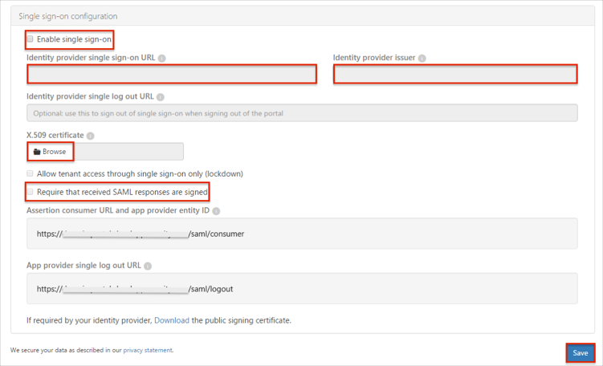
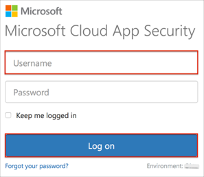

Log in to Microsoft Cloud App Security as an administrator.
Navigate to Settings > General settings.
Scroll down to the Single sign-on configuration section.
Enter the following (see screen shot at end of step for reference):
Check the Enable single sign-on box.
Identity provider single sign-on URL: Copy and paste the following:
Sign into the Okta Admin Dashboard to generate this variable.
Identity provider issuer: Copy and paste the following:
Sign into the Okta Admin Dashboard to generate this variable.
X.509 certificate: x.509 Certificate to download and upload in .cert Format:
Sign into the Okta Admin Dashboard to generate this variable.
Select the Require that received SAML responses are signed option.
Click Save.

Done!
Notes:
SP-initiated flows and IdP-initiated flows are supported.
Just In Time (JIT) provisioning is not supported.
Open your Microsoft Cloud App Security Login URL.
Enter your Username into the corresponding field.
Click Log on.
